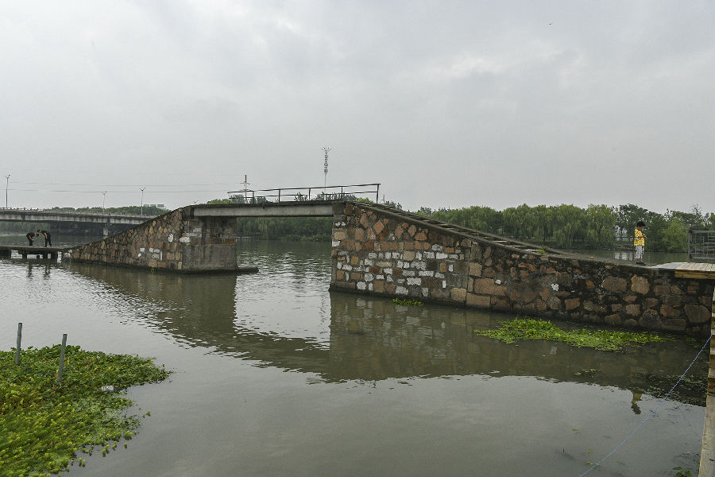

嘉兴市文物保护网 · 市级文物保护点 · 2022-05-16 · 原文

百步桥位于嘉兴市南湖区新嘉街道杉青闸路北端，东沿京杭大运河，南北向跨穆河溪。始建年代不详，宋代张尧同已有《百步桥》诗。相传因桥长百步而得名，原为一座很高的拱桥，清道光十六年（1836）亮周和尚募资重建时，被改为彼此相接的两座小型拱桥，南桥较大，北桥较小。1970年后改为水泥桥。现整体由一座单孔梁式石板桥和四孔梁式平板桥组成。单孔梁式石板桥桥面和南北两侧桥坡现已改为水泥，全长34.55米，桥面宽2.62米。四孔梁式平板桥桥面和桥柱现已改为水泥预制板，全长23.9米，桥面宽2.35米。该桥曾是当地的主要交通要道和水利设施，现为大运河嘉兴段上仅存的两座纤道桥之一，见证了嘉兴地区的水利、经济等方面的发展，对研究嘉兴的运河文化具有很高的历史、科学和艺术价值。2021年被公布为嘉兴市文物保护点。